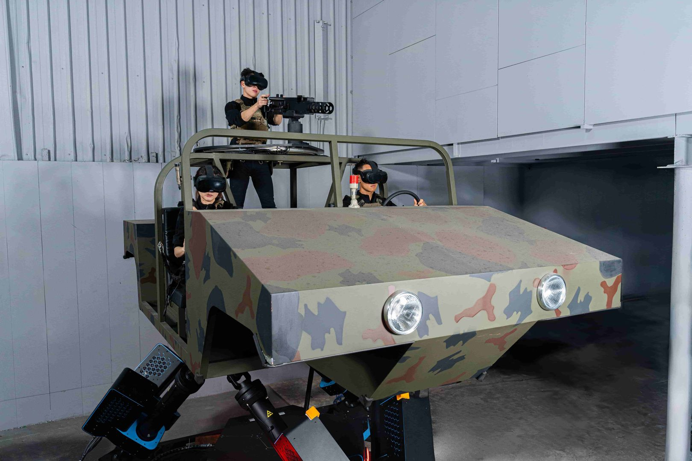
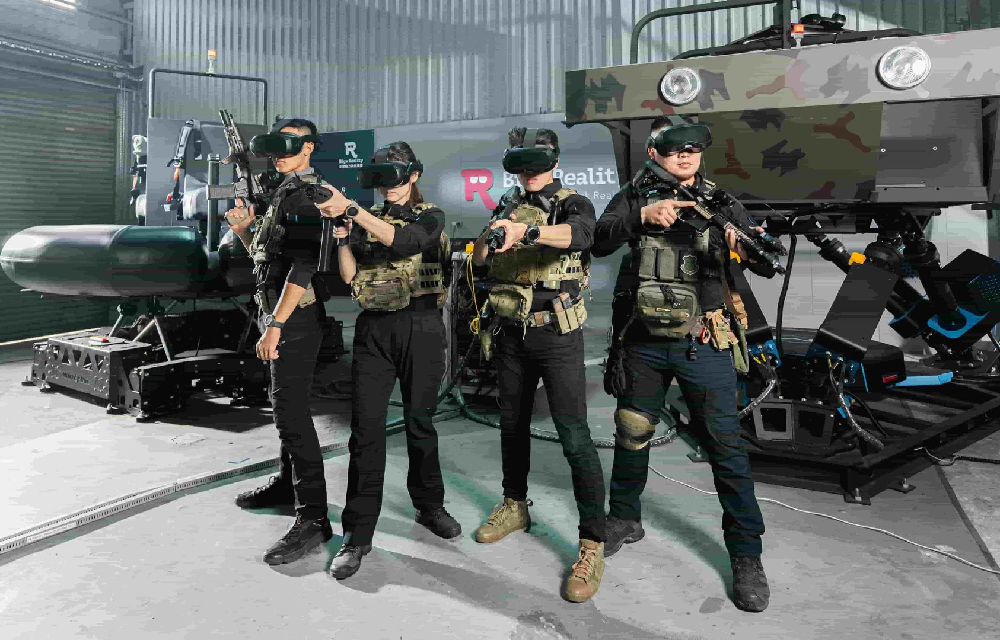
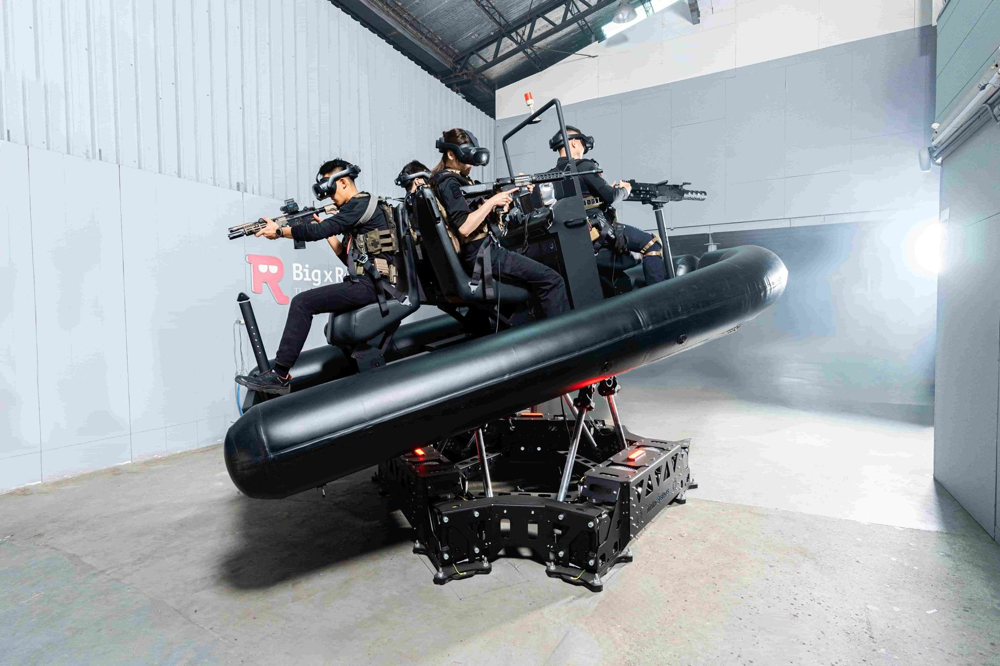
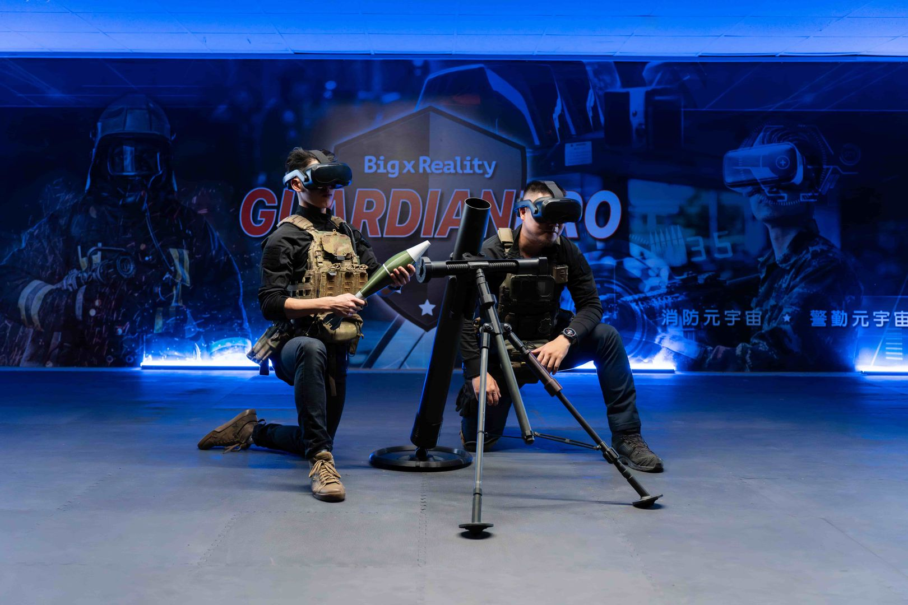
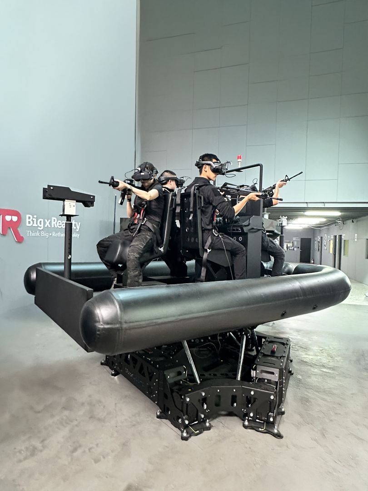
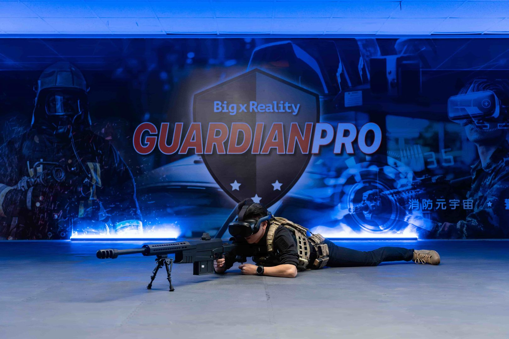

“I worked with Rowan at HTC from 2019 to 2022, where we collaborated on several VR projects. During this time, I was impressed by her technical skills, initiative, and ability to quickly learn new technologies. Rowan is capable of independently planning and implementing projects from start to finish. Since VR is a cutting-edge field that often requires building solutions from scratch, she contributed to the development of APIs for VR headsets and trackers and integrated them into applications using Unreal Engine. She consistently approached challenges with a positive attitude and delivered high-quality results. Her implementations were clean, efficient, and maintainable. She consistently optimized CPU and memory usage while ensuring software reliability and stability. Beyond her technical abilities, Rowan is a supportive and collaborative teammate. She was always willing to help others, and she provided me with valuable guidance when I was learning Unity. Based on my experience working with Rowan, I highly recommend her. I am confident she will be a valuable addition to any team.”
About
I build real-time VR/XR training and simulation systems with Unreal Engine and C++, combining multiplayer gameplay, hardware integration, performance profiling, runtime tooling and developer-facing workflows.
My recent work at Big X Reality focuses on large-scale VR training simulators for mixed PC and PC-to-VR streamed environments. Previously at HTC VIVE R&D, I worked on ViveOpenXR Unreal plugins, samples and tutorials that helped developers integrate OpenXR features into Unreal projects.
I work in both Mandarin Chinese (native) and English, collaborating across engineering, art, design and hardware teams in both languages.
In parallel, I maintain personal Android validation work that extends my Unreal PC/VR debugging experience into Focus 3 standalone OpenXR validation and an in-progress Google Pixel phone build/performance diagnostics track.
LinkedIn Recommendations
Selected excerpts from LinkedIn recommendations by former managers and cross-functional teammates.
“I managed Rowan at Artlord Studio, where she worked as an R&D Engineer on our VR projects. What stood out to me was how reliable she was. She took ownership of problems on her own, without needing to be chased, and thought clearly when working through technical issues. She was also easy to work with and got along well with the rest of the team.”
“I am very happy to write this recommendation for Rowan — a former colleague and a long-time friend I stay in touch with to discuss technology and creative work. I worked with Rowan at Artlord Studio on multiple VR and interactive entertainment projects; I was a 3D artist, and Rowan was mainly responsible for Unreal Engine development and technical integration. Throughout our collaboration, Rowan demonstrated very solid and mature professional ability. She knows Unreal Engine well, clearly understands the relationship between art, interactive experience and performance, and helped the team integrate models, animation, interaction logic and the VR experience smoothly into our projects. What impressed me most was how she built strong communication between engineering and art — whether I raised needs from a visual standpoint or she looked for solutions from the perspective of code architecture and performance constraints, we always found a balance between visual quality and runtime performance. Especially in VR projects, where hardware is limited and a stable experience is essential, Rowan’s technical support let me focus on visual creation with confidence. Across multiplayer VR, device integration, interaction mechanics and performance tuning, Rowan showed reliable judgment and problem-solving ability. Even when requirements changed or integration challenges appeared, she stayed calm, analyzed the situation and found a workable direction together with the team. I believe Rowan has the spirit of a Forward Deployed Engineer: not only mature technical ability, but a willingness to deeply understand front-line needs and create better results with partners across disciplines. She is reliable, communicates clearly, takes responsibility, and has genuine passion for building things. For VR / XR or Unreal Engine projects that require collaboration across art, design and engineering, I highly recommend Rowan.”
Translated from the original Chinese recommendation.
“Working with Rowan has been an absolute honor and privilege. We worked closely together on several VR and interactive projects at ArtLord Studio, where Rowan brought energy, passion, and professionalism to the development process every single day. Rowan possesses a deep understanding of the entire production pipeline, seamlessly combining technical expertise with the creative vision. This comprehensive knowledge made them an invaluable member of the team. Beyond their technical skills, Rowan is an exceptional bridge builder, demonstrating a strong ability to streamline communication and collaboration between the engineering and art departments. Always ready to step in and support the team’s shared goals, Rowan is a reliable, highly skilled, and collaborative professional. They would be a tremendous asset to any studio!”
“I had the pleasure of working closely with Rowan Yu from 2022 to 2024 on two major projects for the National Defence of Taiwan. […] As a Senior Unreal Engineer, she possesses an elite technical foundation in C++, Blueprints, and custom Unreal plugin production, optimizing and iterating on complex multiplayer networking development and large-scale VR motion platform simulations. Notably, she independently designed, iterated, and implemented the entire AI enemies and alliance system from scratch, leveraging Unreal Engine’s Behavior Trees and advanced AI architecture. Her technical mastery extends across the pipeline, ensuring highly effective tactical training via this AI enemy and alliance system, maintaining a rock-solid squad vs squad multiplayer connection, and maximizing frame rates to a stable 90 FPS for VR hardware, delivering robust architecture that elevated our project’s technical standards. Beyond her strong engineering capabilities, Rowan brings exceptional accountability and professional execution to every task, thriving under the rigorous standards required for national defense applications. She is a highly effective collaborator who communicates seamlessly with UX designers, 3D artists, and PMs to bridge the gap between creative vision and technical reality. For me, Rowan is not just an ex-colleague, but a mentor to the XR industry and a life-long friend. Driven by a deep enthusiasm for game development and cutting-edge tech, along with sharp insights into the XR industry, I ensure she will be an invaluable asset to any high-performing engineering team.”
“I worked with Rowan on military XR training project, where she is responsible for 21 NPC behaviour trees across 11 training modes. Whenever we started a new scenario, she quickly sketch out a clear NPC logic frameworks, which helped us move forward with the design. There was one time our NPCs were criticised for looking too repetitive, but it was actually due to limited animation resources. Rowan didn’t just leave it there — she looked for external asset and suggested a few smart ways to improve variety without adding much dev time. […] She’s also efficient, especially when it comes to things like collision handling. Working with her is easy. She listens to the needs from the design side and is always open to exploring better ways to do things. I really hope I get to work with her again.”
Featured Case Studies
Selected project work with context, technical scope and practical engineering impact.
Big X Reality
Senior Unreal Engineer · VR/XR training simulation · multiplayer systems · hardware integration · runtime tooling

Large-Scale Military VR Training Simulator
A large-scale VR training simulation platform combining Windows PC clients, PC-to-VR streamed clients, NPC systems, multi-user training flows and backend-facing runtime data requirements.
My Role
Senior Unreal Engineer responsible for core Unreal-side simulation systems, NPC behavior design and implementation, multiplayer validation support and performance/network bottleneck investigation.
Technical Scope
- Mixed desktop and PC-to-VR streamed training workflows
- Multiplayer simulation support for up to 30 connected computers
- NPC behavior design and implementation for training scenarios
- Performance and network bottleneck investigation with Unreal Insights
- Scenario-level coordination with designers, artists, PMs and backend partners
Engineering Challenge
The project required many PC and PC-to-VR clients, NPC logic and training scenario states to remain stable in packaged multiplayer builds. I used Unreal Insights to trace performance and network transmission bottlenecks, then adjusted Unreal-side systems and scenario logic to improve stability and iteration quality.
Impact
- Supported large-scale multiplayer validation with up to 30 connected computers.
- Designed and implemented NPC behavior systems for training scenarios.
- Used profiling evidence from Unreal Insights to identify and fix performance and networking bottlenecks.
- Helped translate scenario requirements into Unreal-side runtime behavior that could be validated in packaged builds.

Weapon Hardware Signals & Tracking Coordinate Integration
Unreal-side integration work for weapon hardware signals and external tracking systems, connecting Arduino, Antilatency, OptiTrack and headset tracking data into stable VR training interactions.
My Role
Integrated weapon input signals and external tracking data into Unreal gameplay systems, then debugged coordinate-space mismatches across hardware tracking sources and VR headset tracking spaces during packaged-build validation.
Technical Scope
- Arduino-based weapon hardware signal input and Unreal gameplay event mapping
- Antilatency integration for weapon/peripheral tracking workflows
- OptiTrack integration for external tracking data
- Coordinate-space alignment between external tracking systems and headset / VR runtime tracking spaces
- Packaged-build validation with hardware, design and art teammates
Engineering Challenge
Different tracking systems can use different origins, orientations, update timing and reference spaces. The integration work focused on making weapon signals and tracked objects behave consistently in Unreal even when OptiTrack, Antilatency and headset tracking were not naturally aligned to the same coordinate space.
Impact
- Centralized weapon signal and tracking integration logic instead of scattering hardware-specific handling across scenario code.
- Improved reliability of hardware-driven VR interactions during packaged-build testing.
- Reduced debugging ambiguity by separating signal input, tracking data and coordinate conversion concerns.
- Helped cross-functional teammates validate physical device behavior against the in-game representation.

Reusable Unreal Tools & Runtime Tuning
Reusable Unreal tools and workflows designed to reduce repeated setup work, make packaged builds easier to validate and allow non-Unreal teammates to participate in runtime tuning and data collection workflows.
My Role
Designed and implemented reusable Unreal components/plugins and packaged-build workflows for NPC optimization, content generation, telemetry abstraction, runtime configuration and multiplayer validation.
Technical Scope
- NPC performance optimization component plugin
- Project-wide generation tools for NPCs and scene objects
- External Excel/config runtime tuning for packaged EXEs
- .bat launch tools for server and selected client workflows
- Telemetry capture, encryption, timestamp conversion and HTTP/Socket.IO routing
Engineering Challenge
The team needed reusable workflows that worked in packaged builds, not only inside the Unreal Editor. Tools had to reduce repeated manual steps while staying usable by designers, artists, PMs and customer-facing validation sessions.
Impact
- Reduced manual multiplayer setup by automating server/client launch workflows.
- Enabled non-Unreal teammates to tune packaged EXE parameters through external Excel/config files.
- Allowed teammates to attach telemetry capture without rewriting transport or data-format handling.
- Improved reuse by moving shared workflows into project-wide tools instead of feature-specific one-off logic.

Mortar Training Simulator
A two-person training simulator with one desktop user and one PC-to-VR streamed VIVE Pro 2 / VIVE Focus 3 user, combining Unreal gameplay systems, backend data integration and cross-disciplinary iteration with art teams.
My Role
Built Unreal gameplay and multiplayer workflows, collaborated with artists on VR interaction presentation, and integrated backend-facing HTTP workflows for training data exchange.
Technical Scope
- Unreal Engine VR / PC interaction workflow
- Two-user multiplayer synchronization
- HTTP data exchange with backend/database systems
- Art and engineering collaboration for VR interaction fidelity
Engineering Challenge
The simulator needed to make the PC and VR user experiences feel coherent while also passing training-related data to external systems.
Impact
- Created a multiplayer training workflow that combined PC and VR roles in one scenario.
- Connected Unreal-side gameplay events with backend-facing data workflows through HTTP.
- Improved iteration quality by working directly with art teammates on interaction and presentation details.
Personal Android Validation
Self-directed Android ramp-up work that extends Unreal PC/VR debugging experience into Android build, deployment, runtime diagnostics, OpenXR validation and planned Google Pixel phone performance diagnostics.
Google Pixel Android Phone Build & Performance Validation
A planned continuation of my Personal Android Validation track and the Android phone workflow most directly aligned with Google Android / Play / Games preparation. Having borrowed a Google Pixel device, I am beginning to validate Unreal Android phone build/deploy workflows and performance-oriented runtime diagnostics.
Planned Scope
- Unreal Android phone build and deployment workflow.
- ADB / Logcat diagnostics on Google Pixel hardware.
- Android Device Profile behavior checks.
- Initial runtime performance diagnostics and optimization investigation.
Positioning
This belongs to the same personal validation track as the Focus 3 standalone OpenXR baseline. It is framed as planned hands-on Android ramp-up work focused on Android phone build, deployment, diagnostics and performance investigation.
Unreal Android APK Validation on VIVE Focus 3
A personal Android validation exercise that extends my Unreal PC/VR production debugging background into Android build, deployment, OpenXR runtime and diagnostic workflows.
Validated Scope
- Created a new Unreal Engine 5.4.4 VR Template Android project.
- Used VIVE OpenXR Plugin 2.5.0.
- Completed Android ASTC APK packaging.
- Installed the APK to VIVE Focus 3 through ADB.
- Used ADB / Logcat for runtime issue investigation.
- Entered the Unreal VR Template gameplay view in VIVE Focus 3 standalone Android environment.
- Validated controller input as working.
Issues Resolved
- APK recognized as 2D app instead of OpenXR VR app.
- Vulkan startup and Android Device Profile override issues.
- OpenXR being disabled on Android by Unreal through
vr.DisableOpenXROnAndroidWithoutOculus. - Black screen, white screen, inverted image and left/right-eye stereo rendering issues.
Impact
- Established a practical Android build/deploy/debug baseline for Unreal projects.
- Validated a working path from Unreal Android packaging to VIVE Focus 3 standalone VR execution.
- Built troubleshooting experience around ADB, Logcat, Vulkan runtime initialization, OpenXR configuration and Android Device Profile overrides.
- Connected existing Unreal production debugging experience with Android game workflow ramp-up.
HTC VIVE R&D
Developer-facing OpenXR plugin work · Unreal samples · SDK tutorials · XR platform integration
ViveOpenXR Unreal Plugin, Samples & Tutorials
Developer-facing Unreal plugin and sample work for HTC-supported OpenXR features, designed to help Unreal developers adopt XR capabilities faster through working examples and technical tutorials.
My Role
Developed ViveOpenXR plugin features for UE4.27 and UE5.0, built sample projects, authored Unreal-focused tutorials and implemented Live Link workflows for OpenXR Facial Tracking data. Also supported external Unreal developers directly: questions and feature requests reported through HTC's developer community were assigned to me, and I debugged their integration issues, answered them and shipped plugin/sample updates based on that feedback.
Technical Scope
- OpenXR Scene Understanding
- OpenXR Facial Tracking with Unreal Live Link
- Avatar / MetaHuman facial expression samples
- OpenXR Hand Tracking and Eye Gaze samples
- VIVE Cosmos controller mapping support
Engineering Challenge
SDK features are only useful when developers can understand how to integrate them into real engine workflows. The work required turning platform capabilities into Unreal-friendly plugin behavior, sample code and tutorials.
Impact
- Reduced integration friction for Unreal developers adopting HTC-supported OpenXR features.
- Provided developer-facing samples for Facial Tracking, Scene Understanding, Hand Tracking and Eye Gaze.
- Supported SDK adoption through tutorials that explained practical Unreal integration workflows.
- Closed the loop with the developer community: triaged developer-reported issues and feature requests, and shipped plugin/sample updates driven by that feedback.
- Submitted UE5.0 ViveOpenXR plugin work as a pull request to EpicGames/UnrealEngine.
Technical Highlights
Engineering patterns that appear across multiple projects.
Developer-facing SDK Work
Built Unreal samples and tutorials that translate XR platform features into practical developer workflows, including OpenXR Facial Tracking, Scene Understanding, Hand Tracking and Eye Gaze.
Packaged Build Tooling
Created server/client launch and runtime tuning workflows for packaged builds, reducing dependence on the Unreal Editor during validation sessions.
Reusable Plugin Architecture
Designed Unreal components and plugins with reuse in mind, including NPC optimization, data collection and project-wide generation workflows.
Cross-functional Debugging
Collaborated with hardware engineers, artists, backend/database partners, PMs and designers to isolate issues across Unreal, hardware signals, data pipelines and packaged runtime behavior.
Production Version Control & Build Workflow
Ran Unreal production on Perforce-centered version control — a deliberate choice because Blueprints and other binary assets make merge conflicts costly — alongside Jenkins build pipelines and Git, and mentored teammates on setting up and operating these workflows.
Media
Public-facing visual context for selected VR/XR simulation projects.
Big X Reality promotional video. Included only as public-facing portfolio media; technical descriptions remain sanitized.

